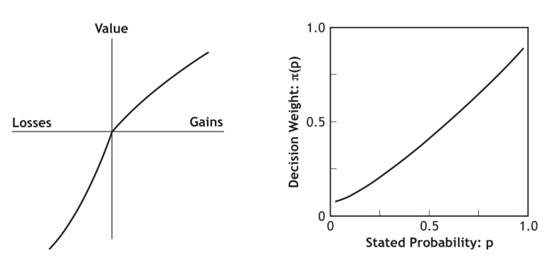

Limited pay
For game of infinite math expectation
Of the form [heads first time]
Given $2 per step and infinite steps
Expected monetary value is infinite
Can be described as a
non-satiation (first derivative is positive)
risk aversion (second derivative is negative)
Maximizing value in Von Neuman expected utility space
Completeness
Completeness assumes that an individual has well defined preferences
Transitivity
Transitivity assumes that preference is consistent across any three options
Continuity
Continuity assumes that there is a "tipping point"
Between being better than and worse than a given middle option
Independence
Independence of irrelevant alternatives assumes that
A preference holds independently of the possibility of another outcome
Objective in theory
Problematic empirically
Practically and philosophically
LaPlace elementary outcomes
Degree of confidence of frequency of occurences
Exact replication is problematic
Locus of uncertainty
Internal or external
Logical school
Strength of connection between evidence and truth of hypothesis
Personal school also subjective school
Degrees of belief applicable to an event
Descriptive to model decision processes
Predictive to develop insights in economics and finance
Postdictive to check models
Prescriptive to improve decisions
All axioms have been shown to be violated
Thus many attempts to improve and relax Eu theory

| Space | Forward |
|---|---|
| Right, Down, Page Down | Next slide |
| Left, Up, Page Up | Previous slide |
| P | Open presenter console |
| H | Toggle this help |